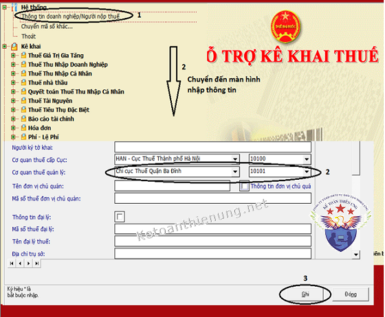
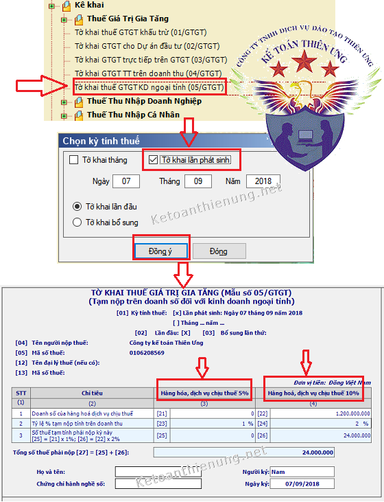
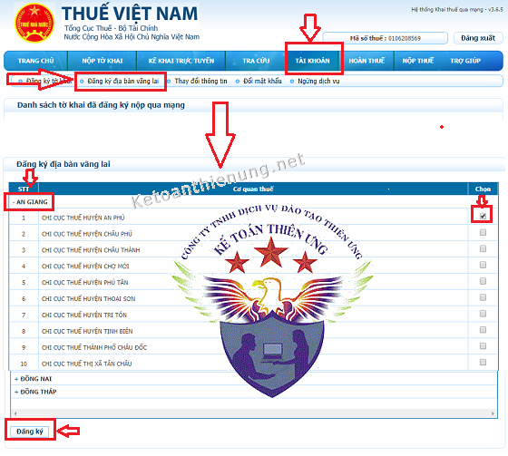
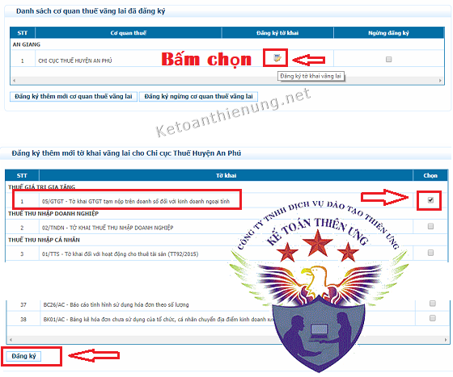
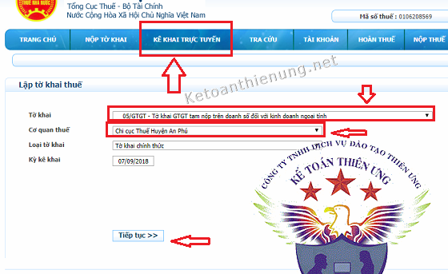
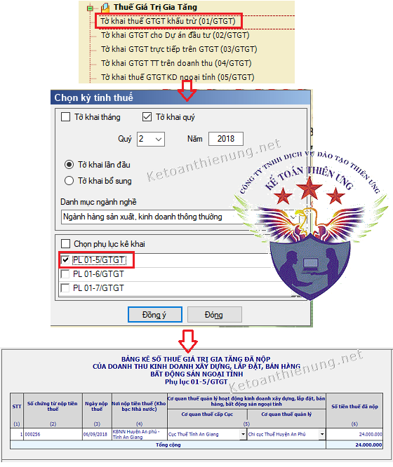
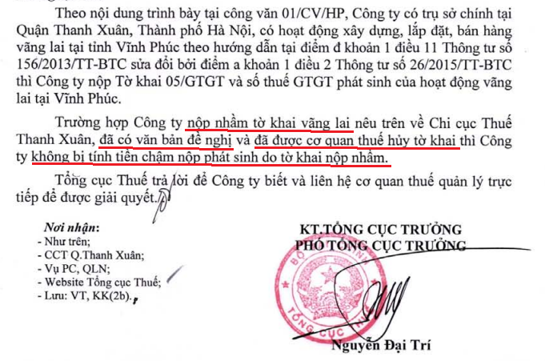
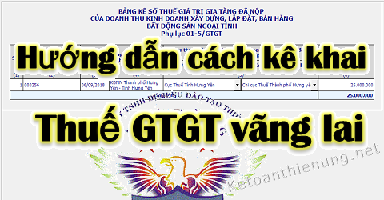

Kê khai thuế GTGT vãng lai ngoại tỉnh như thế nào? Hướng dẫn cách kê khai thuế vãng lai qua mạng, thủ tục hồ sơ kê khai thuế vãng lai, thời hạn nộp tờ khai thuế vãng lai...
Theo Khoản 1 Điều 2 Thông tư 26/2015/TT-BTC (Sửa đổi bổ sung Thông tư 156/2013/TT-BTC và 119/2014/TT-BTC) quy định cụ thể như sau:
I. Các trường hợp phải nộp thuế GTGT vãng lai ngoại tỉnh:
- Trường hợp người nộp thuế có hoạt động kinh doanh xây dựng, lắp đặt, bán hàng vãng lai ngoại tỉnh mà giá trị công trình xây dựng, lắp đặt, bán hàng vãng lai ngoại tỉnh bao gồm cả thuế GTGT từ 1 tỷ đồng trở lên,
- và chuyển nhượng bất động sản ngoại tỉnh không thuộc trường hợp quy định tại điểm c khoản 1 Điều này, mà không thành lập đơn vị trực thuộc tại địa phương cấp tỉnh khác nơi người nộp thuế có trụ sở chính
-> (sau đây gọi là kinh doanh xây dựng, lắp đặt, bán hàng vãng lai, chuyển nhượng bất động sản ngoại tỉnh) thì người nộp thuế phải nộp hồ sơ khai thuế cho cơ quan thuế quản lý tại địa phương có hoạt động xây dựng, lắp đặt, bán hàng vãng lai và chuyển nhượng bất động sản ngoại tỉnh.
Căn cứ tình hình thực tế trên địa bàn quản lý, giao Cục trưởng Cục Thuế địa phương quyết định về nơi kê khai thuế đối với hoạt động xây dựng, lắp đặt, bán hàng vãng lai ngoại tỉnh và chuyển nhượng bất động sản ngoại tỉnh.
Như vậy:
- Nếu là hoạt động xây dựng, lắp đặt, bán hàng vãng lai ngoại tỉnh -> Có giá trị bao gồm cả thuế GTGT từ 1 tỷ đồng trở lên -> Phải kê khai thuế GTGT vãng lai tại địa phương đó.
- Nếu là hoạt động chuyển nhượng bất động sản ngoại tỉnh -> Mà không thành lập đơn vị trực thuộc tại địa phương đó (không phân biệt trên hay dưới 1 tỷ) -> Phải kê khai thuế vãng lai tại địa phương đó.
-------------------------------------------------------------------------------
Ví dụ: Công ty A trụ sở tại Hải Phòng ký hợp đồng cung cấp xi măng cho Công ty B có trụ sở tại Hà Nội. Theo hợp đồng, hàng hóa sẽ được Công ty A giao tại công trình mà công ty B đang xây dựng tại Hà Nội. Hoạt động bán hàng này không được gọi là bán hàng vãng lai ngoại tỉnh. Công ty A thực hiện kê khai thuế GTGT tại Hải Phòng, không phải thực hiện kê khai thuế GTGT tại Hà Nội đối với doanh thu từ hợp đồng bán hàng cho Công ty B.Ví dụ: Công ty B có trụ sở tại thành phố Hồ Chí Minh có các kho hàng tại Hải Phòng, Nghệ An không có chức năng kinh doanh. Khi Công ty B xuất bán hàng hóa tại kho ở Hải Phòng cho Công ty C tại Hưng Yên thì Công ty B không phải kê khai thuế GTGT tại địa phương nơi có các kho hàng (Hải Phòng, Nghệ An).
Ví dụ:
- Công ty A có trụ sở tại Hà Nội ký hợp đồng với Công ty B chỉ để thực hiện tư vấn, khảo sát, thiết kế công trình được xây dựng tại Sơn La mà Công ty B là chủ đầu tư thì hoạt động này không phải hoạt động kinh doanh xây dựng, lắp đặt ngoại tỉnh. Công ty A thực hiện khai thuế GTGT đối với hợp đồng này tại trụ sở chính tại Hà Nội, không phải thực hiện kê khai thuế GTGT tại Sơn La.
- Công ty A có trụ sở tại Hà Nội ký hợp đồng với Công ty C để thực hiện công trình được xây dựng (trong đó có bao gồm cả hoạt động khảo sát, thiết kế) tại Sơn La mà Công ty C là chủ đầu tư, giá trị công trình bao gồm cả thuế GTGT trên 1 tỷ đồng thì Công ty A thực hiện khai thuế GTGT xây dựng ngoại tỉnh đối với hợp đồng này tại Sơn La.
- Công ty A có trụ sở tại Hà Nội ký hợp đồng với Công ty Y để thực hiện công trình được xây dựng (trong đó có bao gồm cả hoạt động khảo sát, thiết kế) tại Yên Bái mà Công ty C là chủ đầu tư, giá trị công trình bao gồm cả thuế GTGT là 770 triệu đồng thì Công ty A không phải thực hiện khai thuế GTGT xây dựng ngoại tỉnh đối với hợp đồng này tại Sơn La
Ví dụ: Công ty B trụ sở tại Hà Nội bán máy điều hoà cho khách tại Hòa Bình (bao gồm cả lắp đặt) thì Công ty B không phải kê khai thuế GTGT tại Hoà Bình.
Ví dụ: Công ty A có trụ sở tại Hà Nội mua 10 căn nhà thuộc 1 dự án của Công ty B tại thành phố Hồ Chí Minh. Sau đó Công ty A bán lại các căn nhà này và thực hiện xuất hóa đơn cho khách hàng C thì Công ty A phải thực hiện kê khai, nộp thuế đối với hoạt động chuyển nhượng bất động sản ngoại tỉnh theo tỷ lệ % doanh thu với cơ quan thuế tại thành phố Hồ Chí Minh.
---------------------------------------------------------------------
Nếu hoạt động xây dựng, lắp đặt liên tỉnh:
- Số thuế GTGT phải nộp cho các tỉnh được tính theo tỷ lệ (%) giá trị đầu tư của công trình tại từng tỉnh do người nộp thuế tự xác định nhân (x) với 2% doanh thu chưa có thuế GTGT của hoạt động xây dựng công trình.
Số thuế GTGT đã nộp (theo chứng từ nộp thuế) của hoạt động xây dựng công trình liên tỉnh được trừ (-) vào số thuế phải nộp trên Tờ khai thuế GTGT (mẫu số 01/GTGT) của người nộp thuế tại trụ sở chính.
Người nộp thuế lập Bảng phân bổ số thuế GTGT phải nộp cho các địa phương nơi có công trình xây dựng, lắp đặt liên tỉnh (mẫu số 01-7/GTGT ban hành kèm theo Thông tư này) và sao gửi kèm theo Tờ khai thuế GTGT cho Cục Thuế nơi được hưởng nguồn thu thuế GTGT.”
--------------------------------------------------------------
II. Trình tự hồ sơ kê khai thuế vãng lai ngoại tỉnh:
a. Thuế suất thuế GTGT tạm tính theo tỷ lệ:
- Đối với hàng hóa, dịch vụ chịu thuế suất thuế GTGT 10% thì chịu 2%.
- Đối với hàng hóa, dịch vụ chịu thuế suất thuế GTGT 5% thì chịu 1%.
=> Trên doanh thu hàng hoá chưa có thuế GTGT với cơ quan Thuế quản lý địa phương nơi có hoạt động xây dựng, lắp đặt, bán hàng vãng lai, chuyển nhượng bất động sản ngoại tỉnh.
(Trên phần mềm HTKK đã quy định rõ tỷ lệ này)
b. Hồ sơ khai thuế GTGT vãng lai ngoại tỉnh:-Tờ khai thuế giá trị gia tăng theo mẫu số 05/GTGT
c. Kỳ kê khai thuế vãng lai:
- Hồ sơ khai thuế GTGT đối với hoạt động kinh doanh xây dựng, lắp đặt, bán hàng vãng lai, chuyển nhượng bất động sản ngoại tỉnh được nộp theo từng lần phát sinh doanh thu.
=> Thời hạn nộp hồ sơ khai thuế theo từng lần phát sinh nghĩa vụ thuế chậm nhất là ngày thứ 10 (mười), kể từ ngày phát sinh nghĩa vụ thuế.
- Trường hợp phát sinh nhiều lần nộp hồ sơ khai thuế trong một tháng thì người nộp thuế có thể đăng ký với Cơ quan thuế nơi nộp hồ sơ khai thuế để nộp hồ sơ khai thuế GTGT theo tháng.
---------------------------------------------------------------------
d. Trình tự kê khai cụ thể như sau:Bước 1: Kê khai tại nơi có hoạt động xây dựng, xây lắp, bán hàng, chuyển nhượng bất động sản ...
- Khi xuất hóa đơn (phát sinh doanh thu) bạn phải kê khai thuế (chậm nhất là 10 ngày)
Chú ý: Ngày lập hóa đơn đối với xây dựng, lắp đặt là thời điểm nghiệm thu, bàn giao công trình, hạng mục công trình, khối lượng xây dựng, lắp đặt hoàn thành, không phân biệt đã thu được tiền hay chưa thu được tiền.
Xem thêm: Cách viết hóa đơn xây dựng
Cách kê khai thuế GTGT vãng lai qua mạng:
Lưu ý: DN phải có chữ ký số (USB TOKEN)
- Đăng nhập vào phần mềm HTKK -> vào phần “Thông tin doanh nghiệp/Người nộp thuế” -> Chuyển CQT nơi nộp tờ khai về địa bàn mà bạn muốn nộp tờ khai vãng lai.

- Tiếp đó: Chọn "Tờ khai thuế GTGT KD ngoại tỉnh (05/GTGT)" -> Chọn "Tờ khai lần phát sinh"

-> Sau khi nhập xong các bạn kết xuất XML để nộp qua mạng.
------------------------------------------------------------
Cách đăng ký nộp thuế vãng lai qua mạng:
-> Đăng nhập vào website: http://kekhaithue.gdt.gov.vn hoặc http://nhantokhai.gdt.gov.vn
-> Vào trình chức năng “Tài khoản" -> "Đăng ký địa bàn vãng lai” -> chọn: Cơ quan thuế cần nộp tờ khai vãng lai -> chọn Cục thuế/Chi cục Thuế -> Bấm “Đăng ký”

-> Tiếp đó Hệ thống hiển thị “Danh sách cơ quan thuế vãng lai đã đăng ký” (Nếu không hiển thị, các bạn vào lại “Tài khoản\Đăng ký địa bàn vãng lai”)
- Từ màn hình “Danh sách cơ quan thuế vãng lai đã đăng ký”, các bạn bấm vào nút “đăng ký tờ khai” tại CQT vãng lai tương ứng.

-> Sau khi đã đăng ký xong: các bạn vào chức năng “Nộp tờ khai\Nộp tờ khai XML”. Chọn tờ khai XML kết xuất từ ứng dụng HTKK -> Ký điện tử -> và Nộp tờ khai.
-----------------------------------------------------------------
CÁCH 2: Các bạn có thể kê khai trực tuyến như sau:
----------------------------------------------------------------------------------------------
Chú ý: Sau khi nộp xong Tờ khai thuế GTGT vãng lai 05/GTGT -> Tiếp đó các bạn nhớ phải nộp Tiền thuế nhé (Có thể nộp điện tử qua mạng hoặc nộp qua kho bạc tại địa phương đó)
-> (Nộp xong sẽ được cấp cho 1 chứng từ khấu trừ thuế, để kê khai tại trụ sở chính)
------------------------------------------------------------------------------
Bước 2: Kê khai tại trụ sở chính:- Khi khai thuế với cơ quan thuế quản lý trực tiếp, người nộp thuế phải tổng hợp doanh thu phát sinh và số thuế GTGT đã nộp của doanh thu kinh doanh xây dựng, lắp đặt, bán hàng vãng lai, chuyển nhượng bất động sản ngoại tỉnh trong hồ sơ khai thuế tại trụ sở chính.
- Số thuế đã nộp (theo chứng từ nộp tiền thuế) của doanh thu kinh doanh xây dựng, lắp đặt, bán hàng vãng lai, chuyển nhượng bất động sản ngoại tỉnh được trừ vào số thuế GTGT phải nộp theo tờ khai thuế GTGT của người nộp thuế tại trụ sở chính, cụ thể như sau:
- Bảng tổng hợp số thuế GTGT đã nộp vãng lai ngoại tỉnh - Phụ lục 01-5/GTGT (Nếu là liên tỉnh thì dùng Phụ lục 01-7/GTGT).
Trình tự kê khai tại trụ sở chính:
- Đăng nhập vào phần mềm HTKK -> Tờ khai GTGT khấu trừ (01/GTGT) -> Chọn: PL 01-5/GTGT (Các bạn nhập số tiền thuế đã nộp theo chứng từ nộp tiền thuế vào phụ lục 01-5/GTGT) -> Sau đó ấn “Ghi”

- Phần mềm sẽ tự động cập nhật số tiền thuế đó (được khấu trừ) vào Chỉ tiêu số [39] "Số thuế đã nộp vãng lai ngoại tỉnh" trên Tờ khai GTGT khấu trừ (01/GTGT).
Lưu ý: Phải lưu giữ chứng từ khấu trừ để chứng minh nhé!.
------------------------------------------------------------------------
Nộp nhầm Tờ khai thuế vãng lai nhưng đã có công văn xin hủy không bị phạt:
Theo Công văn 3087/TCT-KK ngày 10/8/2018 của Tổng cục thuế:

Xem thêm: Kinh nghiệm làm kế toán xây dựng, xây lắp
Các bạn muốn học thực hành làm kế toán tổng hợp trên chứng từ thực tế, thực hành xử lý các nghiệp vụ hạch toán, tính thuế, kê khai thuế GTGT. TNCN, TNDN... tính lương, trích khấu hao TSCĐ....lập báo cáo tài chính, quyết toán thuế cuối năm ... thì có thể tham gia: Lớp học kế toán thực hành thực tế tại Kế toán Diệu Tâm
_________________________________________________
